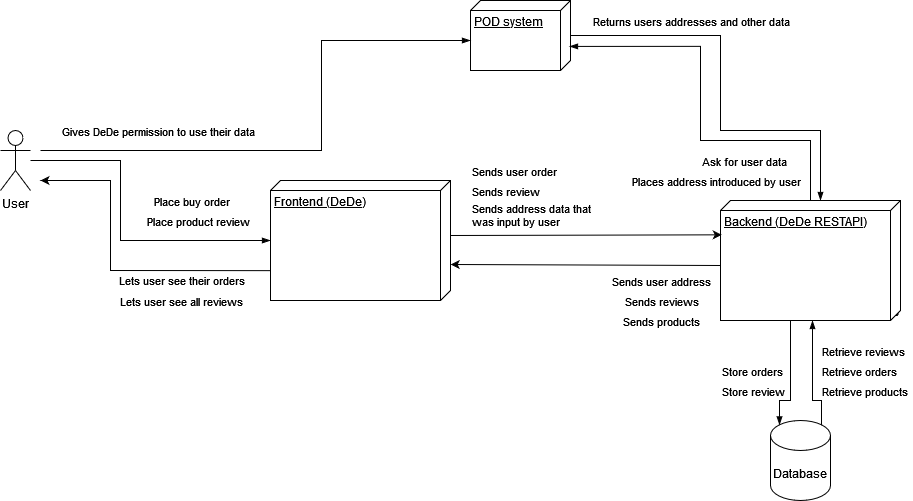
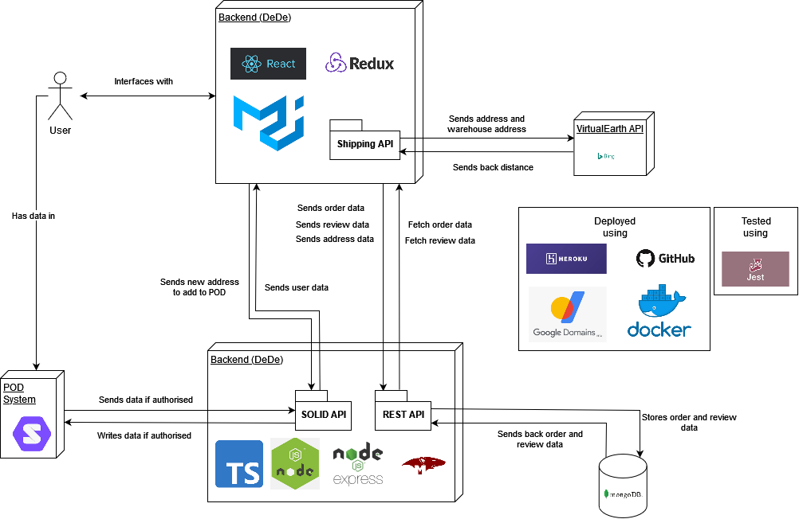
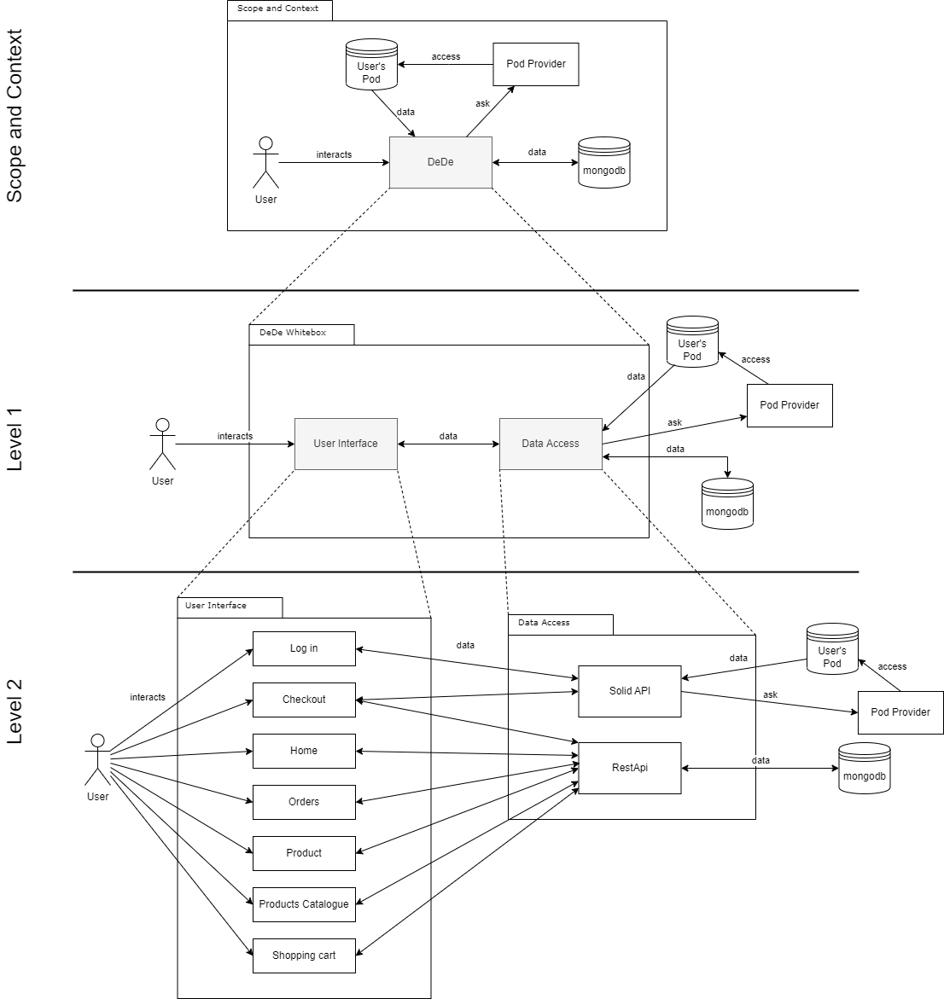
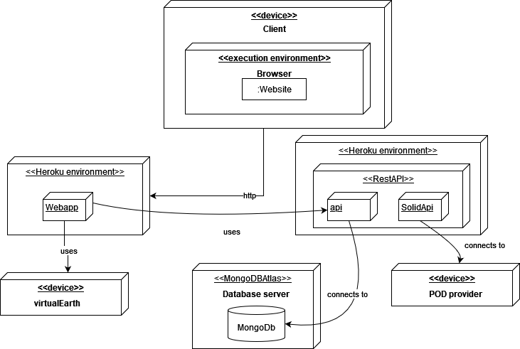
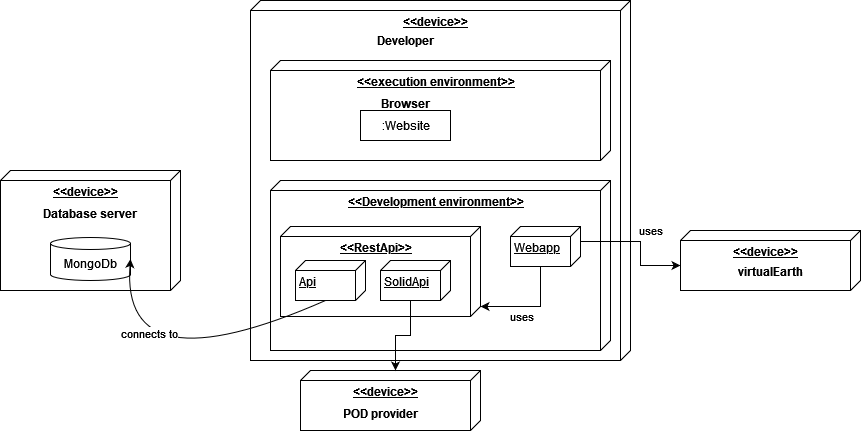

1. Introduction and Goals
The DeDe shopping simulator is the main application that our team will be developing for the subject of Software Architecture.
-
Celia Melendi Lavandera
-
Jesús Alonso García
-
Mario Lombas Calderón
-
Nicolás Lozano García
-
Óscar Pérez Arruñada
DeDe is an application to simulate the management of an online shop, including the customer view, the delivery of items and the visualization of the orders.
1.1. Requirements Overview
The application runs online, deployed on Heroku. Most of the actions taken by the users work using Solid Pods. Users are able to browse the catalog and order products. Then, the app calculates the price based on the delivery address selected by the user, which is stored in their Pod.
1.2. Quality Goals
The quality goals are the following:
1.2.1. Learnability/Usability:
The system must make it easy for novice users or non-technical peaple to learn quickly. Also allows steady progression to expertise.
1.2.2. Decentralization:
The application will not store personal information from customers but will obtain that information from the user’s Pods given that the users give the necessary permissions to the shopping system.
1.2.3. Security/Privacy:
The system will ask for permissionss in order to ensure security.It will not lead to any security problems by not storing personal information about the user.
1.2.4. Accessibilty:
High accessibility should be reached thanks to a continuous integration system.
1.2.5. Testability:
The system should be ready for testing purposes: quality of test strategy and tests code coverage.
1.3. Stakeholders
| Role/Name | Contact | Expectations |
|---|---|---|
Teachers |
The teachers assigned to the group |
Provide project guidance, doubt resolution, supervision… |
Developers |
The students that are part of the development team |
Everything related with design and development issues |
Final users |
The clients that will interact with the system |
The aim of the application, the users that should be satisfied by the system’s benefits |
Classmates |
Classmates from the other projects |
Since it is not about a competition, the development team can obtain help from other development teams by solving doubts or teaching some techniques, for example. |
Solid community |
The Solid community |
Users related with Solid community that are interested on making the product better |
Inrupt and empathy |
Those enterprises |
Interested on knowing the skills of the students related with the project and the project itself |
2. Architecture Constraints
2.1. Technical constraints
| Constraint | Explanation |
|---|---|
Solid |
For this project, we are required to follow the Solid principles. The use of Pods preserves the privacy of the customers as their data is stored in a decentralized way. |
React and TypeScript |
The application will be implemented using the React framework and TypeScript. |
Continuous integration system |
The application should be accessible and deployed using a continuous integration system. |
2.2. Organizational constraints
| Constraint | Explanation |
|---|---|
Git |
Our project will use a repository on GitHub in order to create a Version Control System. |
Team |
Our team is composed by five students of the course with a limited knowledge and experience in the technologies to use. The composition of the team will not be affected in the entirety of the project unless a member decides to drop the subject. |
Time |
The project will be developed in the span of the duration of the course, and so the time to finish the project will be limited. |
2.3. Conventions
| Constraint | Explanation |
|---|---|
Design |
The application will have an overall pleasant aesthetic and should be easy to use by non-technical people, which means its interface should be intuitive. |
Documentation |
For the documentation we will follow the arc42 template |
3. System Scope and Context
The application, called DeDe, is a privacy-aware retail system, that aims to provide users a way to buy goods without having their data compromised. To do this, the user data will be fetched from a Solid project Pod, provided that authorization is granted by the user. The application will provide the user with a way to place orders, as well as allowing the user to view past ones. It also has capabilities to calculate the cost of the item bought.
3.1. Business Context

The user, unidentified, is able to browse products in the store and add them to the cart. However, they must identify themselves if they want to buy. Once they have logged in to their Pods, the system fetches their data and uses it to place an order.
The system is structured in two parts. It has a frontend and a backend. The user only interfaces with the frontend, which in turn interfaces with the backend, which theen works with the Solid Pod provider and the database serve the data the frontend might need.
3.2. Technical Context

The frontend of the application is made with React and Material UI, and has a Shipping API which uses a bing service, VirtualEarth, to calculate distance and shipping costs. It also uses Redux to store the cart state.
The backend uses Express and NodeJS to serve the data. It has two RESTful APIs. One is the regular REST API which fetches data from or saves data to a database, which is built using MongoDB and Mongoose. The other API is the Solid REST API, which uses a custom Solid facade to interface with the Solid Pod provider of the user, and fetch their data or save a new address they might have input.
The whole thing uses Git for the SCCS and GitHub as a means of distributing it. Both parts are on their own Docker containers and deployed to their separate Heroku APPs using GitHub Actions. Then, Google Domains and its DNS service are used to fuse the app under one domain.
The application is tested using Jest.
4. Solution Strategy
4.1. Technology decisions.
A summary of the technical decisions that we have taken so far:
-
MongoDB: The DMBS of our choice.
-
Express: Express is a framework to handle the backend of our application.
-
Redux: It was used to keep the contents of user’s carts.
-
Heroku: It will be where we will deploy our app.
4.2. Decisions about the the top-level decomposition of the system
The system is mainly composed of two parts: The webapp and the REST API.
The webapp is designed using React. It interfaces with the REST API to fetch data and to retrieve Pod information.
The REST API is made with Express in Node.js. It is formed by two essential systems: the API as such and the Solid API. The API as interfaces with MongoDB to store and retrieve data, while the Solid API, which is another RESTful API which interfaces with a facade of our own.
4.3. Decisions on how to achive key quality goals.
For now this will be the quality goals that we will focus on.
-
Usability: We will try to develop an app that is easy to use.
-
Responsiveness: We will try to develop an app that has optimal or at least acceptable response times.
-
Accessibilty: We will try to develop an app that anyone can use.
-
Security: Thanks to Solid we will try to store as little sensitive information about the user in our servers, taking the information about the user from their own Pods.
4.4. Organizational decisions.
-
Meetings and communication: Our meetings will occur in person and online. For the online meetings we will use apps such as Microsoft Teams and Discord. To communicate the smaller things we will use a Whatsapp group chat.
-
Task organization: To organize the tasks that we have to do for the app we will use the GitHub projects, a tool that displays our issues in a KanBan view. The main factor for this was its similarity to a tool we used in the IPS course and because it allows us to see our progress and our partners progress.
-
Development: We will create branches for every task that involves touching the repository files. To merge the project of the branches with the master branch we will use pull request since we believe it’s great for proof-reading and it forces us to "know" a bit about every part of the project so that we don’t have future problems when we will work with each other’s code.
5. Building Block View
5.1. Whitebox Overall System

- Motivation
-
Decentralized Delivery (DeDe) is a retail system that will offer the users the possibility of shopping online and delivering it to their address while keeping the users' private information decentralized in Pods.
- Contained Building Blocks
| Name | Responsibility |
|---|---|
DeDe |
Main part of the application. The user will interact with it and it will access the necessary data from the database and the user’s Pod. |
Pod Provider |
System that stores the Pods of the users and will be used to access them. |
User’s Pod |
The user’s information will be stored here in order to keep it decentralized. |
mongodb |
In this database, the minimal information of the application will be stored. |
5.2. Level 1
| Name | Responsibility |
|---|---|
User Interface |
Layer containing the user interface. Everything the user may interact with will be developed here. |
Data Access |
The main task of this layer will be accessing data in both the database and the user’s Pod. |
5.3. Level 2
| Name | Responsibility |
|---|---|
Log in |
The user can log in to his Solid Pod in order to purchase from the page or see his previous orders. |
Checkout |
This is the view where the user can finish the process of purchasing products. The shipping costs are calculated with the location in the user’s Pod, but the user can choose to edit it. |
Home |
This is the page that the user is first presented with. |
Orders |
The user can see the orders they have done already. |
Product |
The user can see the full information of a single product and can choose to buy it. |
Products Catalogue |
The user can see the full catalogue offered by the retail company and can choose what to buy. |
Shopping cart |
The user can check here the products they have selected to buy. |
Solid API |
Provides the libraries to communicate between the user’s Pod and the Pod provider. |
RestApi |
Provides communication between the database and the application. |
6. Runtime View
6.1. Making an order
-
A client tries to order some items
6.2. Viewing an order
-
A client tries to view an order.

7. Deployment View
7.1. Infrastructure Level 1

In our case the deployment view will be different depending on the stage of the project is on. For development and testing the execution environment will be on each student’s machine. But for the production phase it will be deployed in a Dockerized environment hosted on Heroku. Above is the Deployment view of the latter, at the production stage.
The performance on the deployment build will depend on the user’s internet connection and the servers used for the deployment of the app since those are factors that we can not control. But the performance of the application can be maxed with posible improvements on our code.
| Element | Description |
|---|---|
Client |
The device of the user, of course internet connection is required. |
Web server |
Where we host our app, all browsers should be compatible. |
Virtual Earth |
A service to introduce addresses and get the distance from our warehouse to the destination of the order |
Pod provider |
Solid Pods can be provided by any provider that implements the Solid protocol. |
WebApp |
The front end of our application. |
RestApi |
The back-end of our application. It’s made up of two apis, one that connects to the database to save/fetch data from it and the other connects to solid and fetches/writes data. |
Database server |
Where our database is hosted, since we are using mongoDB Atlas. |
7.2. Infrastructure Level 1.2

The motivation here, as stated in the previous point is similar, but this is how the deployment view would look for the development/testing environment
The same as in the point above, nothing much changes, just the fact that all is hosted on the developer’s pc.
| Element | Description |
|---|---|
Developer |
The device of the developer, internet connection is needed to access the database. |
Development environment |
The back-end and front-end will be hosted locally, in order to not make many changes on the deployment host. |
Virtual Earth |
A service to introduce addresses and get the distance from our warehouse to the destination of the order |
Pod provider |
Solid Pods can be provided by any provider that implements the Solid protocol. |
WebApp |
The front end of our application. |
RestApi |
The back-end of our application. |
Database server |
Where our database will be hosted, since we are using mongoDB Atlas. |
8. Cross-cutting Concepts
8.1. Domain model
8.2. Reduced Pod storage
We do not store anything in the user’s Pod, as we cannot be sure of what does the user want stored in it. We do allow the user to add a new address to their Pod if they do not already have one and want to add it to the Pod. We store all the necesary information in our database, keeping some references to the WebId of the users.
9. Design Decisions
- DataBase Management System
| Technology | Used | Pros | Cons |
|---|---|---|---|
MongoDB |
Yes |
Non relational database, stores information in JSON. Its query language is based on JS, which happens to be the language we are building the application on. Also, it is not neccesary to define the tables. It is not the most used DBMS, but it is widely used alongside JS. |
A bit slow, and does not support JOIN. It also has no query cache. |
MySQL |
No |
Relational database, with tables and JOIN operations. It is more similar to the DBMS we are used to. It also is widely used in the industry, so a lot of docs are available. |
You have to define the schemas, and the query language is more like SQL. |
SQLite |
No |
Lightweight, proven, standard-of-the-industry. Comprehensive documentation. Most used DBMS in the world. |
Very basic, and does not support advanced operations that are not basic SQL language. |
- Continuous deployment system
| Technology | Used | Pros | Cons |
|---|---|---|---|
Heroku |
Yes |
Recommended by the teachers. We are somewhat familiar with it already. Powerful and not too hard to use, as it is just an environment for the server. Does not require special code. Compatibility with docker containers for deployment. |
Special code and configuration needs to be written. Free plan is a bit restrictive. Not a lot of documentation. |
AWS |
No |
Serverless architecture. Powered by Amazon. It is the most used cloud computing service. |
Hard to use. We are not so used to it, and it would impede application development. We are not sure how well it works with Solid. We need to write specific code for it. |
- About Solid
| Option | Used | Pros | Cons |
|---|---|---|---|
Design a custom API to work with the Pod |
Yes |
Ease of use. Better code legibility. Generally more friendly for the majority of the team. Only the person who develops it truly needs to dig into how solid works. |
It needs to be built. If wrongly designed, it could hinder development. Only the person who develops it truly needs to dig into how solid works. |
Use the Pod with just inrupt API |
No |
More flexibility. Forces all the team to learn how Solid works. |
Hard and cumbersome to use. Poor legibility. Forces all the team to learn how Solid works. |
- RESTful API
| Option | Used | Pros | Cons |
|---|---|---|---|
RESTful API |
Yes |
Separates client and server, yet makes it easier for them to work together. Stateless and uniform interface. |
It needs to be designed. A poor design could hinder project development. |
No API |
No |
Faster to build. Easier to do and understand for a small project. |
Cumbersome, and rapidly loses legibility and cohesivity as project size increases. Will incurr in a lot of technical debt. |
- User Accounts
| Option | Used | Pros | Cons |
|---|---|---|---|
Use only the Pod to identify a user |
Yes |
Allows for more privacy and aligns more closely with the Solid philosophy of decentralization. |
Can cause problems realted the constant access to the Pods and the Solid servers. |
Force users to have accounts |
No |
Users get identified in our server and their info is stored in our database, reducing the interaction with Solid to a minimum. |
Goes against all the privacy and decentralization principles that Solid stands for. |
10. Quality Requirements
10.1. Quality Tree
10.2. Quality Scenarios
| Quality attribute | Scenario | Approach |
|---|---|---|
Usability |
We want to have a way of filtering the products that makes the searching process faster for the client |
We develop a primitive search engine and classification for the types of products. |
Usability |
Fast paying process |
We developed an easy check out process that is called directly from the cart. |
Decentralization |
Decentralization of the log in process (serverless) |
It is gained by means of calling the Pod service provider and delegating the process to it. |
Privacy |
We don’t want to put in danger user data |
Unless it is required by the client the application will not show any personal data. |
Accesibilty |
We want to traverse the application easily |
Intuitive navigation bar present in every route of the application. |
11. Risks and Technical Debts
These are the technical debts we have identified as of the moment.
| Technical Debt | Description |
|---|---|
Unfamiliarity with Solid |
Since Solid is a new technology for all the team members and there is little documentation available online, it requires a lot of personal research that takes up a lot of time. |
Unfamiliarity with React and TypeScript |
We have no knowledge of TypeScript nor the React library, and thus we will need to learn to work with them. React’s documentation will be very useful since it is extensive and well explained. It will require some time to get used to it. |
Time management |
Having specified deadlines and not being able to prioritize the project above all our other workload will require a very good organization. |
Team |
When working with a new team for a project, a lot of time will be used in order to bond with the members and have a good rapport between us. |
These are some risks we might encounter during the development process.
| Risk | Description |
|---|---|
Solid failure |
If the Pod host fails or the Solid specification changes due to it being a fairly new concept, our application will not work properly. |
12. Glossary
| Term | Definition |
|---|---|
Solid |
A project for web decentralization based on the use of private data stores called Pods. |
Solid Pod |
A Pod is a data storage unit in which a user can record information. The owner of the Pod can then choose who can access their data. |
Node.js |
A JavaScript runtime enviroment compiler that allows users to run the code outside web browsers. |
TypeScript |
A programming laguage based on JavaScript, but with the addition of types, similar to Java and other Object Oriented Languages. |
Heroku |
A cloud platform which allows their users to deploy and manage web applications based in a varied array of programming languages. |
About arc42
arc42, the Template for documentation of software and system architecture.
By Dr. Gernot Starke, Dr. Peter Hruschka and contributors.
Template Revision: 7.0 EN (based on asciidoc), January 2017
© We acknowledge that this document uses material from the arc 42 architecture template, http://www.arc42.de. Created by Dr. Peter Hruschka & Dr. Gernot Starke.